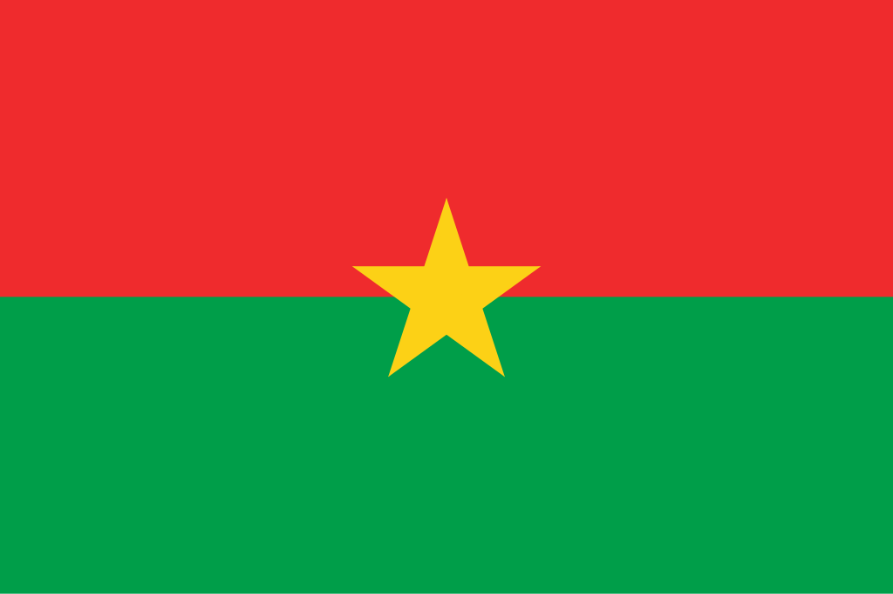

Burquina Fasso
 Burquina Fasso, oficialmente República de Burquina Fasso, é um país da África Ocidental, sem saída para o mar, que faz fronteira com Mali a noroeste, Níger a nordeste, Benim a sudeste, Togo e Gana ao sul, e Costa do Marfim a sudoeste. Com uma população de mais de 22 milhões de habitantes, o país é marcado por sua diversidade étnica e cultural, sendo habitado por mais de 60 grupos étnicos diferentes, entre os quais os mossi representam a maioria. A capital é Uagadugu (Ouagadougou), que concentra o governo, a economia e a vida cultural do país. Apesar de sua economia ser frágil e baseada majoritariamente na agricultura de subsistência e na produção de algodão e ouro, Burquina Fasso é reconhecido por sua resiliência cultural e histórica, além de ser membro de organizações como a União Africana, a CEDEAO (Comunidade Econômica dos Estados da África Ocidental) e a ONU.
História
A história de Burquina Fasso é profundamente ligada ao povo Mossi, que estabeleceu poderosos reinos na região a partir do século XI. Esses reinos, conhecidos como os Reinos Mossi, conseguiram manter sua independência por séculos, resistindo tanto ao domínio islâmico quanto à expansão de impérios vizinhos. Durante a colonização europeia, no final do século XIX, a França incorporou o território, formando a colônia chamada de Alto Volta. Sob domínio colonial, os burquinenses foram explorados economicamente, com imposição de trabalho forçado e reorganização das estruturas políticas tradicionais. Ainda assim, os Mossi e outros povos locais mantiveram tradições e resistência cultural frente ao domínio estrangeiro.
Em 1960, o país conquistou sua independência como República do Alto Volta, adotando esse nome em referência aos rios que cortam a região. Somente em 1984, durante o governo de Thomas Sankara, o país passou a se chamar Burquina Fasso, que significa “terra dos homens íntegros” nas línguas locais mooré e diúla. Sankara implementou profundas reformas sociais, econômicas e culturais, defendendo o pan-africanismo e a autodeterminação, mas seu governo terminou com sua morte em 1987. Desde então, Burquina Fasso passou por instabilidades políticas, golpes de Estado e desafios econômicos, embora siga sendo reconhecido como um país de forte identidade cultural e de grande importância para a região da África Ocidental.
Cultura
A cultura de Burquina Fasso é marcada por sua diversidade étnica, refletida nas mais de 60 etnias que compõem a população. O povo Mossi, majoritário, tem grande influência sobre a organização social e cultural, mas outras etnias, como os Bobo, Gurunsi, Lobi, Peul (fulani) e Diúla, contribuem com tradições, línguas e costumes próprios. A língua oficial é o francês, legado do período colonial, mas o mooré e o diúla são amplamente falados no dia a dia. A música e a dança têm papel central, com instrumentos como o balafon e o djembe sendo usados em festas e rituais. O país também é famoso internacionalmente pelo cinema, especialmente graças ao Festival Pan-Africano de Cinema e Televisão de Uagadugu (FESPACO), um dos maiores eventos culturais da África. A religião predominante é dividida entre o islamismo, o cristianismo e as religiões tradicionais africanas, que mantêm forte ligação com os ancestrais e a natureza.


Clima
O clima de Burquina Fasso é tipicamente tropical de savana, marcado por duas estações bem definidas: a seca e a chuvosa. A estação seca, que dura de novembro a maio, é fortemente influenciada pelos ventos quentes e secos do Saara, conhecidos como harmatã, que trazem poeira e calor intenso. Nesse período, as temperaturas podem ultrapassar facilmente os 40 °C em algumas regiões. Já a estação chuvosa ocorre entre junho e outubro, com precipitações concentradas, fundamentais para a agricultura de subsistência. No norte, o clima é mais árido, com paisagens de estepe e semi-deserto, enquanto no sul as chuvas são mais abundantes, favorecendo a vegetação de savana. Essa variação climática torna o manejo da água um grande desafio para o país, que sofre frequentemente com secas e desertificação.
Biodiversidade
A biodiversidade de Burquina Fasso reflete os ecossistemas de savana e zonas semiáridas típicas da África Ocidental. A fauna inclui espécies como elefantes, hipopótamos, leões, hienas, antílopes e diversas aves migratórias, que se concentram em áreas protegidas e reservas naturais. O país conta com parques nacionais importantes, como o Parque Nacional Arli, o Parque Nacional W e a Reserva de Nazinga, que preservam parte significativa da fauna e flora locais. A flora é composta principalmente por gramíneas, arbustos e árvores resistentes à seca, como a acácia e o baobá, símbolos da resistência africana.
No entanto, a biodiversidade enfrenta sérios desafios devido à expansão agrícola, à urbanização, às queimadas e às mudanças climáticas, que intensificam a desertificação. Programas de conservação e manejo sustentável vêm sendo implementados, com apoio de organizações internacionais, visando proteger os habitats naturais e garantir a coexistência entre comunidades humanas e a vida selvagem. O ecoturismo também surge como alternativa para valorizar e preservar os recursos naturais do país.


Cidades
As cidades de Burquina Fasso são centros de diversidade cultural e atividade econômica, apesar do país ser predominantemente rural. A capital, Uagadugu, é a maior cidade e principal polo político, econômico e cultural, conhecida por sua vida artística vibrante, universidades e pelo Festival FESPACO. A segunda maior cidade é Bobo-Dioulasso, que se destaca por sua herança cultural, música tradicional e arquitetura histórica, como a famosa Grande Mesquita de Bobo-Dioulasso. Ambas as cidades são pontos de convergência de diferentes etnias e religiões, simbolizando a diversidade do país e desempenhando papéis centrais no desenvolvimento nacional.